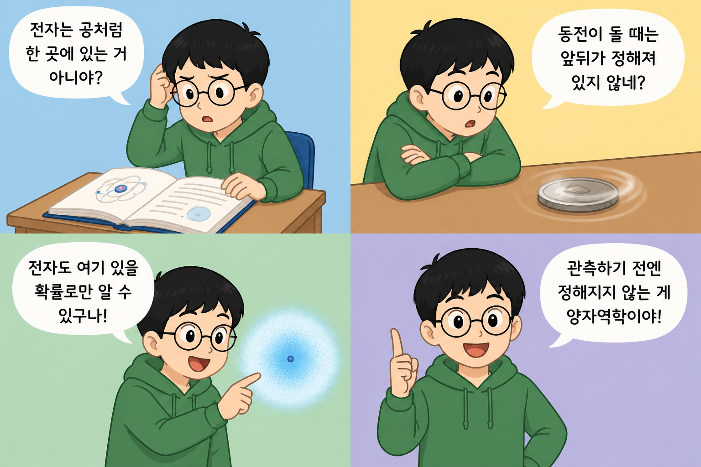
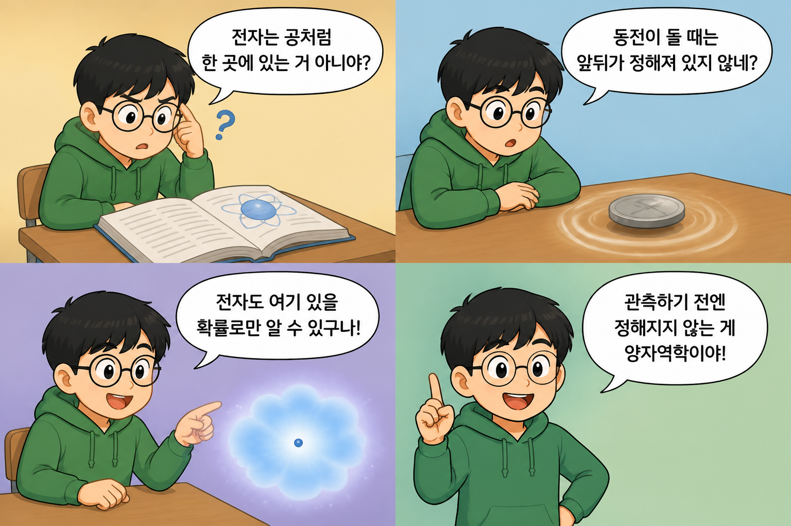
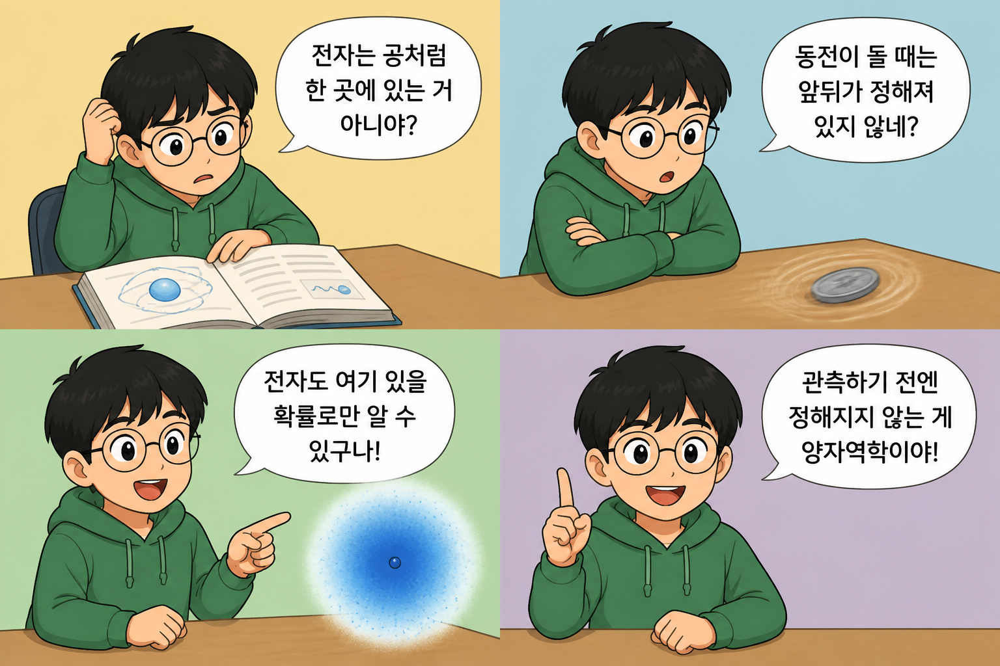
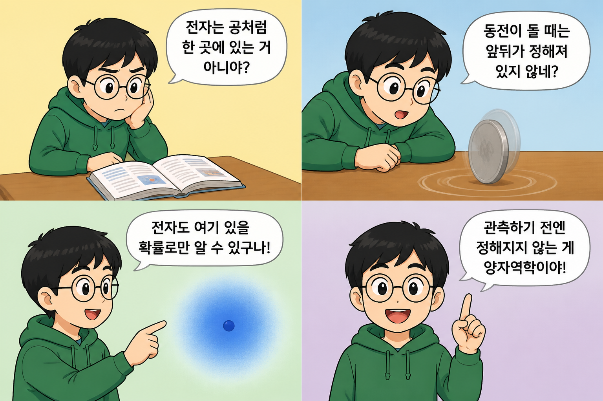
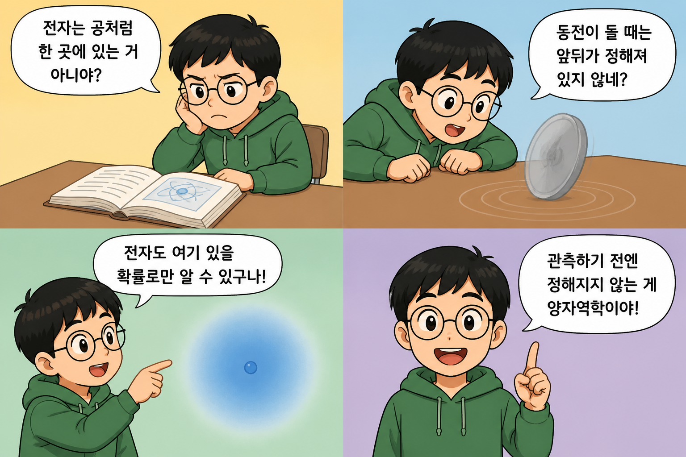
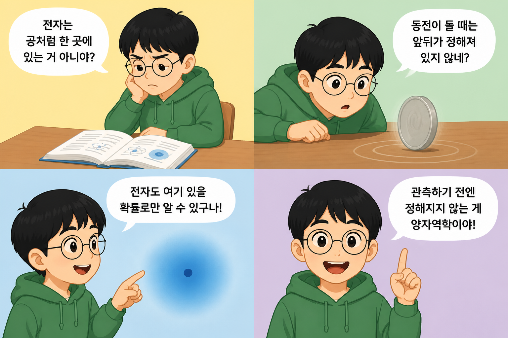

Tier 2 — 장면 서술 A/B + 비전 검증
| 전체 패널 통과 | P2(동전) 통과 |
|---|
| A 개념형 | 9/12 (75%) | 0/3 (0%) |
| B 시각형 | 12/12 (100%) | 3/3 (100%) |
각 이미지의 판정 결과가 실제와 맞는지 눈으로 대조하십시오.
비전 판정이 틀리면 검증기를 본선에 쓸 수 없습니다.
A_run1 · 23.2s

- P1 통과 — Boy is seated at a desk with an open book and has a puzzled/confused expression.
- P2 실패 — The coin is lying flat on the table, not standing upright on its edge (even though it appears motion-blurred).
- P3 통과 — Boy is pointing at a blurry glowing blue sphere/cloud that has a dot inside.
- P4 통과 — Boy faces forward smiling with one index finger raised.
A_run2 · 24.9s

- P1 통과 — Boy is seated at a desk with an open book and has a puzzled/confused expression (question mark shown).
- P2 실패 — The coin is lying flat on the table, not standing upright on its edge (even though it has some motion blur).
- P3 통과 — The boy is pointing at a blurry glowing cloud/sphere with a dot inside.
- P4 통과 — The boy faces forward smiling with one index finger raised.
A_run3 · 23.1s

- P1 통과 — Boy is seated at a desk with an open book and has a puzzled/confused expression.
- P2 실패 — The coin appears to be lying flat on the table rather than standing upright on its edge.
- P3 통과 — Boy is pointing at a blurry glowing blue sphere/cloud that has a dot inside.
- P4 통과 — Boy faces forward smiling with one index finger raised.
B_run1 · 23.0s

- P1 통과 — Boy is seated at a desk with an open book and has a puzzled/confused expression.
- P2 통과 — Coin is upright on its edge and appears motion-blurred with no readable design/portrait visible.
- P3 통과 — Boy is pointing at a blurry glowing blue sphere/cloud with a dot inside.
- P4 통과 — Boy faces forward smiling and holds one index finger raised.
B_run2 · 22.7s

- P1 통과 — Boy is seated at a desk with an open book and has a puzzled/confused expression.
- P2 통과 — Coin is upright on its edge and appears motion-blurred with no readable design on its face.
- P3 통과 — Boy is pointing toward a blurry glowing blue sphere/cloud with a small dot inside.
- P4 통과 — Boy faces forward smiling and holds up one index finger.
B_run3 · 20.5s

- P1 통과 — Boy is seated at a desk with an open book and has a puzzled/confused expression.
- P2 통과 — Coin is upright on its edge and the face is motion-blurred with no readable design.
- P3 통과 — Boy is pointing toward a blurry glowing blue cloud/sphere with a dot inside.
- P4 통과 — Boy faces forward smiling with one index finger raised.